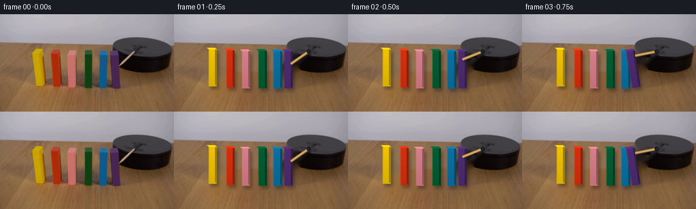
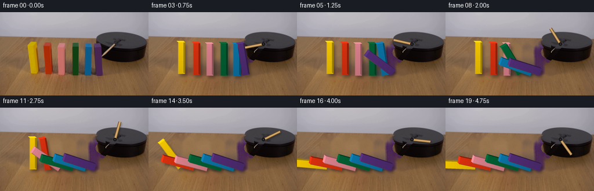
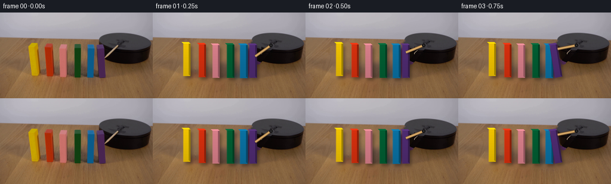
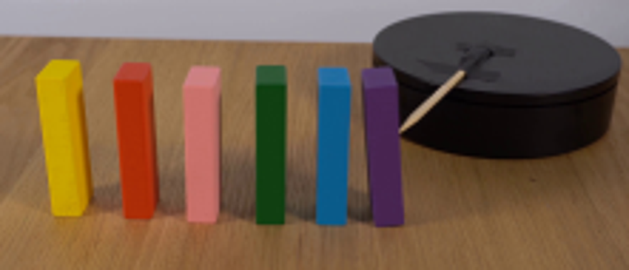
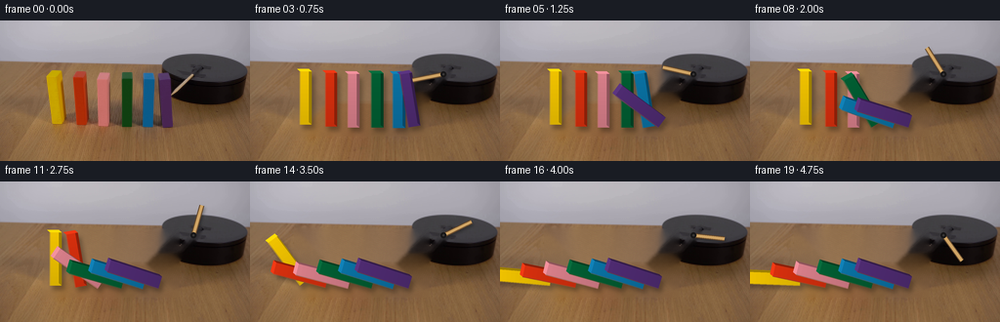
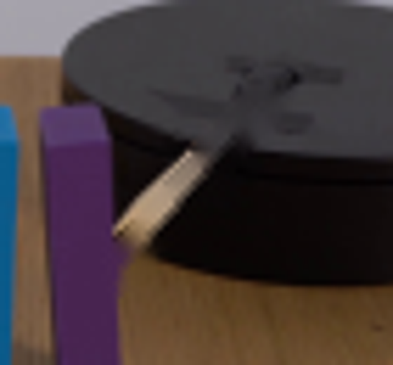
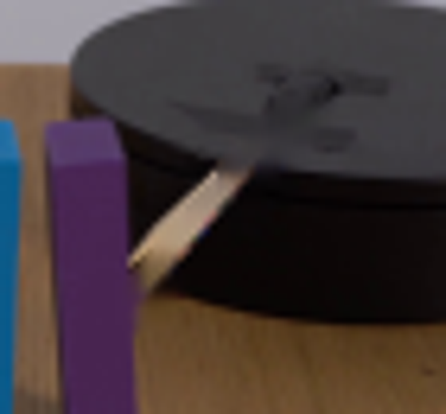
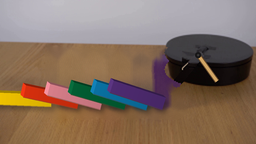
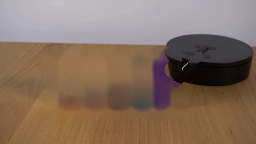
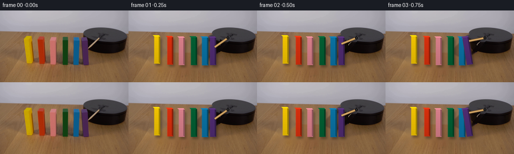

CODING AGENTS AS PIXEL WORLD MODELS
traex/GPT-5.6-Sol · 0035
点击播放 · 原生 RGB 像素
逐轮保存的候选
回放视频、检查图与代码变化。
每份候选均可单独播放。实际图片检查记录在下方工具轨迹中。
候选 01播放与检查图
点击播放 · 原生 RGB 像素


展开代码变化
--- 上一保存版本
+++ 本次保存版本
@@ -0,0 +1,142 @@
+from pathlib import Path
+import math
+import numpy as np
+import cv2
+from PIL import Image, ImageDraw, ImageFilter
+import artifact_io
+
+CASE = Path(__file__).resolve().parent
+W,H,S = 256,144,4
+src = np.array(Image.open(CASE/'first_frame.png').convert('RGB'))
+
+# Recover the locked-off set behind the moving props. Narrow, separately
+# inpainted regions preserve the surrounding real wood grain better than one
+# large synthetic patch.
+bgr = cv2.cvtColor(src, cv2.COLOR_RGB2BGR)
+mask = np.zeros((H,W), np.uint8)
+blocks = [
+ # x0,y0,x1,y1, pivot x,y, color
+ (47,49,68,111, 51.0,106.5,(239,194,0)),
+ (74,50,93,113, 77.0,108.5,(213,47,14)),
+ (97,50,116,114,100.0,109.5,(214,126,137)),
+ (121,50,141,114,124.0,109.5,(2,93,50)),
+ (143,51,163,115,146.0,110.0,(10,112,161)),
+ (159,50,180,114,162.0,109.5,(78,43,112)),
+]
+for x0,y0,x1,y1,*_ in blocks:
+ cv2.rectangle(mask,(x0-2,y0-2),(x1+3,y1+3),255,-1)
+# erase the original cast shadows at the feet
+cv2.rectangle(mask,(43,103),(181,118),255,-1)
+# original arm only; keep the turntable intact
+cv2.line(mask,(176,83),(201,53),255,7,cv2.LINE_AA)
+plate = cv2.inpaint(bgr,mask,5,cv2.INPAINT_TELEA)
+plate = cv2.cvtColor(plate,cv2.COLOR_BGR2RGB)
+
+# Gently put plausible fine grain back into the filled tabletop. It is kept
+# extremely low contrast so that the photographic source remains dominant.
+rng = np.random.default_rng(3501)
+noise = rng.normal(0,1,(H,W)).astype(np.float32)
+noise = cv2.GaussianBlur(noise,(0,0),0.8)
+wood_region = (mask>0) & (np.indices((H,W))[0] > 42)
+for c,gain in enumerate((2.0,1.6,1.1)):
+ q = plate[:,:,c].astype(np.float32)
+ q[wood_region] += noise[wood_region]*gain
+ plate[:,:,c] = np.clip(q,0,255).astype(np.uint8)
+
+# Domino timing: angle from upright toward the left, in degrees.
+starts = [12,10,8,6,4,2] # yellow ... purple
+# Smooth five-frame toppling, with slight variations for a natural cascade.
+def domino_angle(i, f):
+ start = starts[i]
+ if f < start: return 0.0
+ u = min(1.0, (f-start)/4.5)
+ # accelerating start, soft collision/settling at the end
+ s = u*u*(3-2*u)
+ final = [88,78,75,74,73,72][i]
+ a = final*s
+ if u >= 1 and f > start+5:
+ a += (1.2 if (f-start)%2==0 else -0.7)*math.exp(-(f-start-5)*.7)
+ return a
+
+def poly(draw, pts, fill):
+ if isinstance(draw, Image.Image): draw = ImageDraw.Draw(draw)
+ draw.polygon([(round(x*S),round(y*S)) for x,y in pts], fill=fill)
+
+def render_block(layer, shadow, idx, ang, frame):
+ x0,y0,x1,y1,px,py,col = blocks[idx]
+ width = (x1-x0)-7.0
+ height = (y1-y0)-7.0
+ # Individual dimensions sampled from the source silhouettes.
+ widths=[12.0,12.0,12.0,12.5,13.0,12.5]
+ heights=[54.5,55.0,55.0,55.5,55.5,55.0]
+ width,height=widths[idx],heights[idx]
+ t=math.radians(ang)
+ up=np.array([-math.sin(t),-math.cos(t)])*height
+ right=np.array([math.cos(t),-math.sin(t)])*width
+ A=np.array([px,py]); B=A+right; D=A+up; C=B+up
+ body=[A,B,C,D]
+ # A soft contact shadow follows each moving silhouette.
+ shoff=np.array([3.0,4.2])
+ poly(shadow,[p+shoff for p in body],(12,8,4,80))
+
+ d=np.array([-2.8,-2.5])
+ base=np.array(col,dtype=float)
+ # front has a subtle vertical illumination variation, rendered in strips
+ n=12
+ for j in range(n):
+ q0=j/n; q1=(j+1)/n
+ p0=A*(1-q0)+D*q0; p1=B*(1-q0)+C*q0
+ p2=B*(1-q1)+C*q1; p3=A*(1-q1)+D*q1
+ light=0.90+0.10*q1
+ cc=tuple(np.clip(base*light,0,255).astype(int))+(255,)
+ poly(layer,[p0,p1,p2,p3],cc)
+ # narrow shaded side and bright top plane give the blocks real thickness
+ side=np.clip(base*.66,0,255).astype(int)
+ top=np.clip(base*1.12+np.array([5,5,5]),0,255).astype(int)
+ poly(layer,[B,C,C+d,B+d],tuple(side)+(255,))
+ poly(layer,[D,C,C+d,D+d],tuple(top)+(255,))
+ # tiny highlight along the lit left edge
+ dr=ImageDraw.Draw(layer)
+ dr.line([(round(D[0]*S),round(D[1]*S)),(round(A[0]*S),round(A[1]*S))],
+ fill=tuple(np.clip(base*1.08,0,255).astype(int))+(125,),width=1*S)
+
+def arm_angle(f):
+ # Start at the exact source pose. The clockwise sweep meets purple near f2.
+ if f==0: return 131.0
+ vals=[131,145,158,169,180,193,207,222,238,254,270,286,302,318,334,350,366,382,398,414]
+ return vals[f]
+
+def make_frame(f):
+ if f==0:
+ return src.copy()
+ bg=Image.fromarray(plate).resize((W*S,H*S),Image.Resampling.LANCZOS).convert('RGBA')
+ shadow=Image.new('RGBA',(W*S,H*S),(0,0,0,0))
+ obj=Image.new('RGBA',(W*S,H*S),(0,0,0,0))
+ # Draw left-to-right. Right neighbors are nearer the camera and naturally
+ # cover a small part of a domino which has just struck them.
+ for i in range(6):
+ render_block(obj,shadow,i,domino_angle(i,f),f)
+ shadow=shadow.filter(ImageFilter.GaussianBlur(2.2*S))
+ bg=Image.alpha_composite(bg,shadow)
+ bg=Image.alpha_composite(bg,obj)
+
+ # Motor arm: cast shadow first, then warm wooden shaft and dark central hub.
+ aa=math.radians(arm_angle(f)); pivot=np.array([198.0,55.2]); L=32.0
+ end=pivot+np.array([math.cos(aa),math.sin(aa)])*L
+ sh=Image.new('RGBA',(W*S,H*S),(0,0,0,0)); sd=ImageDraw.Draw(sh)
+ sd.line([(int((pivot[0]+1.5)*S),int((pivot[1]+2)*S)),
+ (int((end[0]+1.5)*S),int((end[1]+2)*S))], fill=(0,0,0,80), width=4*S)
+ sh=sh.filter(ImageFilter.GaussianBlur(1.5*S)); bg=Image.alpha_composite(bg,sh)
+ arm=Image.new('RGBA',(W*S,H*S),(0,0,0,0)); ad=ImageDraw.Draw(arm)
+ ad.line([(int(pivot[0]*S),int(pivot[1]*S)),(int(end[0]*S),int(end[1]*S))],
+ fill=(101,72,43,255),width=5*S)
+ ad.line([(int(pivot[0]*S),int(pivot[1]*S)),(int(end[0]*S),int(end[1]*S))],
+ fill=(209,165,101,255),width=3*S)
+ ad.ellipse(((pivot[0]-3)*S,(pivot[1]-3)*S,(pivot[0]+3)*S,(pivot[1]+3)*S),fill=(24,23,24,255))
+ ad.ellipse(((pivot[0]-1)*S,(pivot[1]-1)*S,(pivot[0]+1)*S,(pivot[1]+1)*S),fill=(59,57,56,255))
+ bg=Image.alpha_composite(bg,arm)
+ return np.array(bg.convert('RGB').resize((W,H),Image.Resampling.LANCZOS),dtype=np.uint8)
+
+frames=np.stack([make_frame(f) for f in range(20)])
+assert np.array_equal(frames[0],src)
+artifact_io.save(frames,CASE)
候选 02播放与检查图
点击播放 · 原生 RGB 像素

展开代码变化
--- 上一保存版本
+++ 本次保存版本
@@ -9,11 +9,9 @@
W,H,S = 256,144,4
src = np.array(Image.open(CASE/'first_frame.png').convert('RGB'))
-# Recover the locked-off set behind the moving props. Narrow, separately
-# inpainted regions preserve the surrounding real wood grain better than one
-# large synthetic patch.
+# Recover the locked-off set behind the moving props. Each wooden object is
+# removed independently so the black machine cannot bleed into the tabletop.
bgr = cv2.cvtColor(src, cv2.COLOR_RGB2BGR)
-mask = np.zeros((H,W), np.uint8)
blocks = [
# x0,y0,x1,y1, pivot x,y, color
(47,49,68,111, 51.0,106.5,(239,194,0)),
@@ -23,25 +21,45 @@
(143,51,163,115,146.0,110.0,(10,112,161)),
(159,50,180,114,162.0,109.5,(78,43,112)),
]
+plate_bgr=bgr.copy()
+mask_all=np.zeros((H,W),np.uint8)
for x0,y0,x1,y1,*_ in blocks:
- cv2.rectangle(mask,(x0-2,y0-2),(x1+3,y1+3),255,-1)
-# erase the original cast shadows at the feet
-cv2.rectangle(mask,(43,103),(181,118),255,-1)
-# original arm only; keep the turntable intact
-cv2.line(mask,(176,83),(201,53),255,7,cv2.LINE_AA)
-plate = cv2.inpaint(bgr,mask,5,cv2.INPAINT_TELEA)
-plate = cv2.cvtColor(plate,cv2.COLOR_BGR2RGB)
+ m=np.zeros((H,W),np.uint8)
+ cv2.rectangle(m,(x0-2,y0-2),(x1+2,y1+2),255,-1)
+ cv2.ellipse(m,(int((x0+x1)/2+2),110),(int((x1-x0)/2+6),9),0,0,360,255,-1)
+ # Do not ask inpainting to cross into the machine silhouette.
+ yy,xx=np.indices((H,W)); disk=((xx-209)/45)**2+((yy-52)/18)**2 <= 1
+ side=(((xx-209)/45)**2+((yy-69)/18)**2 <= 1) & (yy>=52)
+ m[disk|side]=0
+ plate_bgr=cv2.inpaint(plate_bgr,m,4,cv2.INPAINT_TELEA)
+ mask_all=np.maximum(mask_all,m)
+# Restore the hidden sliver of the turntable behind the purple block by
+# reflecting clean pixels from the right half of the rotationally symmetric disk.
+yy,xx=np.indices((H,W)); top=((xx-209)/45)**2+((yy-52)/18)**2 <= 1
+side=(((xx-209)/45)**2+((yy-69)/18)**2 <= 1) & (yy>=52)
+hidden=(xx>=158)&(xx<=181)&(yy>=47)&(yy<=116)&(top|side)
+for y,x in zip(*np.where(hidden)):
+ sx=int(np.clip(418-x,181,252))
+ plate_bgr[y,x]=bgr[y,sx]
+# Remove only the pale original arm, analytically repainting the disk surface.
+armmask=np.zeros((H,W),np.uint8); cv2.line(armmask,(176,83),(199,55),255,5,cv2.LINE_AA)
+for y,x in zip(*np.where(armmask>0)):
+ boundary=52+18*math.sqrt(max(0,1-((x-209)/45)**2))
+ if y <= boundary: # charcoal top
+ sx=int(np.clip(418-x,181,250)); plate_bgr[y,x]=bgr[y,sx]
+ elif (((x-209)/45)**2+((y-69)/18)**2 <= 1): # black cylindrical side
+ plate_bgr[y,x]=bgr[y,int(np.clip(x+28,183,248))]
+ else: # tiny tip over the tabletop
+ plate_bgr[y,x]=plate_bgr[y,int(np.clip(x-10,0,255))]
+plate = cv2.cvtColor(plate_bgr,cv2.COLOR_BGR2RGB)
-# Gently put plausible fine grain back into the filled tabletop. It is kept
-# extremely low contrast so that the photographic source remains dominant.
+# Gently put plausible fine grain back into inpainted tabletop only.
rng = np.random.default_rng(3501)
-noise = rng.normal(0,1,(H,W)).astype(np.float32)
-noise = cv2.GaussianBlur(noise,(0,0),0.8)
-wood_region = (mask>0) & (np.indices((H,W))[0] > 42)
+noise = cv2.GaussianBlur(rng.normal(0,1,(H,W)).astype(np.float32),(0,0),0.8)
+wood_region = (mask_all>0) & (yy>42)
for c,gain in enumerate((2.0,1.6,1.1)):
- q = plate[:,:,c].astype(np.float32)
- q[wood_region] += noise[wood_region]*gain
- plate[:,:,c] = np.clip(q,0,255).astype(np.uint8)
+ q=plate[:,:,c].astype(np.float32); q[wood_region]+=noise[wood_region]*gain
+ plate[:,:,c]=np.clip(q,0,255).astype(np.uint8)
# Domino timing: angle from upright toward the left, in degrees.
starts = [12,10,8,6,4,2] # yellow ... purple
候选 03播放与检查图
点击播放 · 原生 RGB 像素

展开代码变化
--- 上一保存版本
+++ 本次保存版本
@@ -31,6 +31,9 @@
yy,xx=np.indices((H,W)); disk=((xx-209)/45)**2+((yy-52)/18)**2 <= 1
side=(((xx-209)/45)**2+((yy-69)/18)**2 <= 1) & (yy>=52)
m[disk|side]=0
+ # Broad foot shadows belong to the original standing blocks.
+ cv2.rectangle(m,(x0-6,101),(x1+11,121),255,-1)
+ m[disk|side]=0
plate_bgr=cv2.inpaint(plate_bgr,m,4,cv2.INPAINT_TELEA)
mask_all=np.maximum(mask_all,m)
# Restore the hidden sliver of the turntable behind the purple block by
@@ -51,6 +54,11 @@
plate_bgr[y,x]=bgr[y,int(np.clip(x+28,183,248))]
else: # tiny tip over the tabletop
plate_bgr[y,x]=plate_bgr[y,int(np.clip(x-10,0,255))]
+# One final narrow cleanup pass removes residual colored edge ghosts.
+cleanup=np.zeros((H,W),np.uint8)
+cv2.rectangle(cleanup,(43,47),(179,120),255,-1)
+cleanup[disk|side]=0
+plate_bgr=cv2.inpaint(plate_bgr,cleanup,3,cv2.INPAINT_TELEA)
plate = cv2.cvtColor(plate_bgr,cv2.COLOR_BGR2RGB)
# Gently put plausible fine grain back into inpainted tabletop only.
候选 04播放与检查图
可观测工具轨迹
实际执行的命令与返回图片。
命令 1exit 0
/bin/bash -lc "cat prompt.txt && printf '\\n---RULES---\\n' && cat GENERATION_RULES.md"
命令 2exit 0
/bin/bash -lc "find . -maxdepth 2 -type f -printf '%p %s bytes\\n' | sort && printf '\\nTools:\\n' && command -v ffmpeg || true && command -v python3 || true"
命令 3exit 0
/bin/bash -lc "python3 - <<'PY' import importlib.util for x in ['cv2','PIL','numpy','scipy','imageio']: print(x, bool(importlib.util.find_spec(x))) PY"
命令 4exit 0
/bin/bash -lc 'cat artifact_io.py'
命令 5exit 0
/bin/bash -lc "python3 - <<'PY'
from PIL import Image
im=Image.open('first_frame.png')
im.crop((35,30,256,125)).resize((884,380)).save('.tmp/crop.png')
PY"命令 6exit 1
/bin/bash -lc "cat > generate.py <<'PY'
from pathlib import Path
import math
import numpy as np
import cv2
from PIL import Image, ImageDraw, ImageFilter
import artifact_io
CASE = Path(__file__).resolve().parent
W,H,S = 256,144,4
src = np.array(Image.open(CASE/'first_frame.png').convert('RGB'))
# Recover the locked-off set behind the moving props. Narrow, separately
# inpainted regions preserve the surrounding real wood grain better than one
# large synthetic patch.
bgr = cv2.cvtColor(src, cv2.COLOR_RGB2BGR)
mask = np.zeros((H,W), np.uint8)
blocks = [
# x0,y0,x1,y1, pivot x,y, color
(47,49,68,111, 51.0,106.5,(239,194,0)),
(74,50,93,113, 77.0,108.5,(213,47,14)),
(97,50,116,114,100.0,109.5,(214,126,137)),
(121,50,141,114,124.0,109.5,(2,93,50)),
(143,51,163,115,146.0,110.0,(10,112,161)),
(159,50,180,114,162.0,109.5,(78,43,112)),
]
for x0,y0,x1,y1,*_ in blocks:
cv2.rectangle(mask,(x0-2,y0-2),(x1+3,y1+3),255,-1)
# erase the original cast shadows at the feet
cv2.rectangle(mask,(43,103),(181,118),255,-1)
# original arm only; keep the turntable intact
cv2.line(mask,(176,83),(201,53),255,7,cv2.LINE_AA)
plate = cv2.inpaint(bgr,mask,5,cv2.INPAINT_TELEA)
plate = cv2.cvtColor(plate,cv2.COLOR_BGR2RGB)
# Gently put plausible fine grain back into the filled tabletop. It is kept
# extremely low contrast so that the photographic source remains dominant.
rng = np.random.default_rng(3501)
noise = rng.normal(0,1,(H,W)).astype(np.float32)
noise = cv2.GaussianBlur(noise,(0,0),0.8)
wood_region = (mask>0) & (np.indices((H,W))[0] > 42)
for c,gain in enumerate((2.0,1.6,1.1)):
q = plate[:,:,c].astype(np.float32)
q[wood_region] += noise[wood_region]*gain
plate[:,:,c] = np.clip(q,0,255).astype(np.uint8)
# Domino timing: angle from upright toward the left, in degrees.
starts = [12,10,8,6,4,2] # yellow ... purple
# Smooth five-frame toppling, with slight variations for a natural cascade.
def domino_angle(i, f):
start = starts[i]
if f < start: return 0.0
u = min(1.0, (f-start)/4.5)
# accelerating start, soft collision/settling at the end
s = u*u*(3-2*u)
final = [88,78,75,74,73,72][i]
a = final*s
if u >= 1 and f > start+5:
a += (1.2 if (f-start)%2==0 else -0.7)*math.exp(-(f-start-5)*.7)
return a
def poly(draw, pts, fill):
draw.polygon([(round(x*S),round(y*S)) for x,y in pts], fill=fill)
def render_block(layer, shadow, idx, ang, frame):
x0,y0,x1,y1,px,py,col = blocks[idx]
width = (x1-x0)-7.0
height = (y1-y0)-7.0
# Individual dimensions sampled from the source silhouettes.
widths=[12.0,12.0,12.0,12.5,13.0,12.5]
heights=[54.5,55.0,55.0,55.5,55.5,55.0]
width,height=widths[idx],heights[idx]
t=math.radians(ang)
up=np.array([-math.sin(t),-math.cos(t)])*height
right=np.array([math.cos(t),-math.sin(t)])*width
A=np.array([px,py]); B=A+right; D=A+up; C=B+up
body=[A,B,C,D]
# A soft contact shadow follows each moving silhouette.
shoff=np.array([3.0,4.2])
poly(shadow,[p+shoff for p in body],(12,8,4,80))
d=np.array([-2.8,-2.5])
base=np.array(col,dtype=float)
# front has a subtle vertical illumination variation, rendered in strips
n=12
for j in range(n):
q0=j/n; q1=(j+1)/n
p0=A*(1-q0)+D*q0; p1=B*(1-q0)+C*q0
p2=B*(1-q1)+C*q1; p3=A*(1-q1)+D*q1
light=0.90+0.10*q1
cc=tuple(np.clip(base*light,0,255).astype(int))+(255,)
poly(layer,[p0,p1,p2,p3],cc)
# narrow shaded side and bright top plane give the blocks real thickness
side=np.clip(base*.66,0,255).astype(int)
top=np.clip(base*1.12+np.array([5,5,5]),0,255).astype(int)
poly(layer,[B,C,C+d,B+d],tuple(side)+(255,))
poly(layer,[D,C,C+d,D+d],tuple(top)+(255,))
# tiny highlight along the lit left edge
dr=ImageDraw.Draw(layer)
dr.line([(round(D[0]*S),round(D[1]*S)),(round(A[0]*S),round(A[1]*S))],
fill=tuple(np.clip(base*1.08,0,255).astype(int))+(125,),width=1*S)
def arm_angle(f):
# Start at the exact source pose. The clockwise sweep meets purple near f2.
if f==0: return 131.0
vals=[131,145,158,169,180,193,207,222,238,254,270,286,302,318,334,350,366,382,398,414]
return vals[f]
def make_frame(f):
if f==0:
return src.copy()
bg=Image.fromarray(plate).resize((W*S,H*S),Image.Resampling.LANCZOS).convert('RGBA')
shadow=Image.new('RGBA',(W*S,H*S),(0,0,0,0))
obj=Image.new('RGBA',(W*S,H*S),(0,0,0,0))
# Draw left-to-right. Right neighbors are nearer the camera and naturally
# cover a small part of a domino which has just struck them.
for i in range(6):
render_block(obj,shadow,i,domino_angle(i,f),f)
shadow=shadow.filter(ImageFilter.GaussianBlur(2.2*S))
bg=Image.alpha_composite(bg,shadow)
bg=Image.alpha_composite(bg,obj)
# Motor arm: cast shadow first, then warm wooden shaft and dark central hub.
aa=math.radians(arm_angle(f)); pivot=np.array([198.0,55.2]); L=32.0
end=pivot+np.array([math.cos(aa),math.sin(aa)])*L
sh=Image.new('RGBA',(W*S,H*S),(0,0,0,0)); sd=ImageDraw.Draw(sh)
sd.line([(int((pivot[0]+1.5)*S),int((pivot[1]+2)*S)),
(int((end[0]+1.5)*S),int((end[1]+2)*S))], fill=(0,0,0,80), width=4*S)
sh=sh.filter(ImageFilter.GaussianBlur(1.5*S)); bg=Image.alpha_composite(bg,sh)
arm=Image.new('RGBA',(W*S,H*S),(0,0,0,0)); ad=ImageDraw.Draw(arm)
ad.line([(int(pivot[0]*S),int(pivot[1]*S)),(int(end[0]*S),int(end[1]*S))],
fill=(101,72,43,255),width=5*S)
ad.line([(int(pivot[0]*S),int(pivot[1]*S)),(int(end[0]*S),int(end[1]*S))],
fill=(209,165,101,255),width=3*S)
ad.ellipse(((pivot[0]-3)*S,(pivot[1]-3)*S,(pivot[0]+3)*S,(pivot[1]+3)*S),fill=(24,23,24,255))
ad.ellipse(((pivot[0]-1)*S,(pivot[1]-1)*S,(pivot[0]+1)*S,(pivot[1]+1)*S),fill=(59,57,56,255))
bg=Image.alpha_composite(bg,arm)
return np.array(bg.convert('RGB').resize((W,H),Image.Resampling.LANCZOS),dtype=np.uint8)
frames=np.stack([make_frame(f) for f in range(20)])
assert np.array_equal(frames[0],src)
artifact_io.save(frames,CASE)
PY
python3 generate.py"命令 7exit 0
/bin/bash -lc "python3 - <<'PY' p='generate.py' s=open(p).read() s=s.replace(\"def poly(draw, pts, fill):\\n draw.polygon\", \"def poly(draw, pts, fill):\\n if isinstance(draw, Image.Image): draw = ImageDraw.Draw(draw)\\n draw.polygon\") open(p,'w').write(s) PY python3 generate.py"
命令 8exit 0
/bin/bash -lc "python3 - <<'PY'
import cv2,numpy as np
from PIL import Image
s=cv2.imread('first_frame.png')
m=np.zeros(s.shape[:2],np.uint8)
cv2.line(m,(176,83),(201,53),255,5,cv2.LINE_AA)
for meth,name in [(cv2.INPAINT_TELEA,'tel'),(cv2.INPAINT_NS,'ns')]:
x=cv2.inpaint(s,m,2,meth)
Image.fromarray(cv2.cvtColor(x,cv2.COLOR_BGR2RGB)).crop((155,35,225,100)).resize((560,520)).save('.tmp/'+name+'.png')
PY"命令 9exit 1
/bin/bash -lc "python3 - <<'PY' p='generate.py'; s=open(p).read() a=s.index(\"# Recover the locked-off set\") b=s.index(\"# Domino timing\") new='''# Recover the locked-off set behind the moving props. Each wooden object is\\n# removed independently so the black machine cannot bleed into the tabletop.\\nbgr = cv2.cvtColor(src, cv2.COLOR_RGB2BGR)\\nblocks = [\\n # x0,y0,x1,y1, pivot x,y, color\\n (47,49,68,111, 51.0,106.5,(239,194,0)),\\n (74,50,93,113, 77.0,108.5,(213,47,14)),\\n (97,50,116,114,100.0,109.5,(214,126,137)),\\n (121,50,141,114,124.0,109.5,(2,93,50)),\\n (143,51,163,115,146.0,110.0,(10,112,161)),\\n (159,50,180,114,162.0,109.5,(78,43,112)),\\n]\\nplate_bgr=bgr.copy()\\nmask_all=np.zeros((H,W),np.uint8)\\nfor x0,y0,x1,y1,*_ in blocks:\\n m=np.zeros((H,W),np.uint8)\\n cv2.rectangle(m,(x0-2,y0-2),(x1+2,y1+2),255,-1)\\n cv2.ellipse(m,((x0-3,101),(x1+8,119)),255,-1)\\n # Do not ask inpainting to cross into the machine silhouette.\\n yy,xx=np.indices((H,W)); disk=((xx-209)/45)**2+((yy-52)/18)**2 <= 1\\n side=(((xx-209)/45)**2+((yy-69)/18)**2 <= 1) & (yy>=52)\\n m[disk|side]=0\\n plate_bgr=cv2.inpaint(plate_bgr,m,4,cv2.INPAINT_TELEA)\\n mask_all=np.maximum(mask_all,m)\\n# Restore the hidden sliver of the turntable behind the purple block by\\n# reflecting clean pixels from the right half of the rotationally symmetric disk.\\nyy,xx=np.indices((H,W)); top=((xx-209)/45)**2+((yy-52)/18)**2 <= 1\\nside=(((xx-209)/45)**2+((yy-69)/18)**2 <= 1) & (yy>=52)\\nhidden=(xx>=158)&(xx<=181)&(yy>=47)&(yy<=116)&(top|side)\\nfor y,x in zip(*np.where(hidden)):\\n sx=int(np.clip(418-x,181,252))\\n plate_bgr[y,x]=bgr[y,sx]\\n# Remove only the pale original arm, analytically repainting the disk surface.\\narmmask=np.zeros((H,W),np.uint8); cv2.line(armmask,(176,83),(199,55),255,5,cv2.LINE_AA)\\nfor y,x in zip(*np.where(armmask>0)):\\n boundary=52+18*math.sqrt(max(0,1-((x-209)/45)**2))\\n if y <= boundary: # charcoal top\\n sx=int(np.clip(418-x,181,250)); plate_bgr[y,x]=bgr[y,sx]\\n elif (((x-209)/45)**2+((y-69)/18)**2 <= 1): # black cylindrical side\\n plate_bgr[y,x]=bgr[y,int(np.clip(x+28,183,248))]\\n else: # tiny tip over the tabletop\\n plate_bgr[y,x]=plate_bgr[y,int(np.clip(x-10,0,255))]\\nplate = cv2.cvtColor(plate_bgr,cv2.COLOR_BGR2RGB)\\n\\n# Gently put plausible fine grain back into inpainted tabletop only.\\nrng = np.random.default_rng(3501)\\nnoise = cv2.GaussianBlur(rng.normal(0,1,(H,W)).astype(np.float32),(0,0),0.8)\\nwood_region = (mask_all>0) & (yy>42)\\nfor c,gain in enumerate((2.0,1.6,1.1)):\\n q=plate[:,:,c].astype(np.float32); q[wood_region]+=noise[wood_region]*gain\\n plate[:,:,c]=np.clip(q,0,255).astype(np.uint8)\\n\\n''' open(p,'w').write(s[:a]+new+s[b:]) PY python3 generate.py"
命令 10exit 1
/bin/bash -lc "sed -i \"s/cv2\\.ellipse(m,((x0-3,101),(x1+8,119)),255,-1)/cv2.ellipse(m,((x0+x1)\\/2+2,110),((x1-x0)\\/2+6,9),0,0,360,255,-1)/\" generate.py python3 generate.py"
命令 11exit 0
/bin/bash -lc "sed -i 's/((x0+x1)\\/2+2,110),((x1-x0)\\/2+6,9)/(int((x0+x1)\\/2+2),110),(int((x1-x0)\\/2+6),9)/' generate.py python3 generate.py"
命令 12exit 0
/bin/bash -lc "python3 - <<'PY'
exec(open('generate.py').read().replace(\"frames=np.stack([make_frame(f) for f in range(20)])\",\"Image.fromarray(plate).save('.tmp/plate.png')\\nframes=np.stack([make_frame(f) for f in range(20)])\"))
PY"命令 13exit 0
/bin/bash -lc "python3 - <<'PY' p='generate.py'; s=open(p).read() s=s.replace(\"m[disk|side]=0\", \"m[disk|side]=0\\n # Broad foot shadows belong to the original standing blocks.\\n cv2.rectangle(m,(x0-6,101),(x1+11,121),255,-1)\\n m[disk|side]=0\") s=s.replace(\"plate = cv2.cvtColor(plate_bgr,cv2.COLOR_BGR2RGB)\\n\\n# Gently\", \"# One final narrow cleanup pass removes residual colored edge ghosts.\\ncleanup=np.zeros((H,W),np.uint8)\\ncv2.rectangle(cleanup,(43,47),(179,120),255,-1)\\ncleanup[disk|side]=0\\nplate_bgr=cv2.inpaint(plate_bgr,cleanup,3,cv2.INPAINT_TELEA)\\nplate = cv2.cvtColor(plate_bgr,cv2.COLOR_BGR2RGB)\\n\\n# Gently\") open(p,'w').write(s) PY python3 generate.py"
命令 14exit 0
/bin/bash -lc "python3 - <<'PY'
import numpy as np
from PIL import Image
z=np.load('pixels.npz')['pixels']
ims=np.stack([np.array(Image.open(f'frames/{i:02d}.png').convert('RGB')) for i in range(20)])
src=np.array(Image.open('first_frame.png').convert('RGB'))
print('frames',ims.shape,ims.dtype,'first_equal',np.array_equal(ims[0],src),'npz',z.shape,z.dtype)
print('files',len(list(__import__('pathlib').Path('frames').glob('*.png'))))
PY
ls -lh pixels.npz index.html inspection.png generate.py"视觉工具实际返回图片 1

视觉工具实际返回图片 2

视觉工具实际返回图片 3

视觉工具实际返回图片 4

视觉工具实际返回图片 5

视觉工具实际返回图片 6

视觉工具实际返回图片 7

视觉工具实际返回图片 8

视觉工具实际返回图片 9

视觉工具实际返回图片 10

保存候选 4 份；完成命令 14 次；可验证图片返回 10 张。原始 API 响应与完整日志保留在本地。